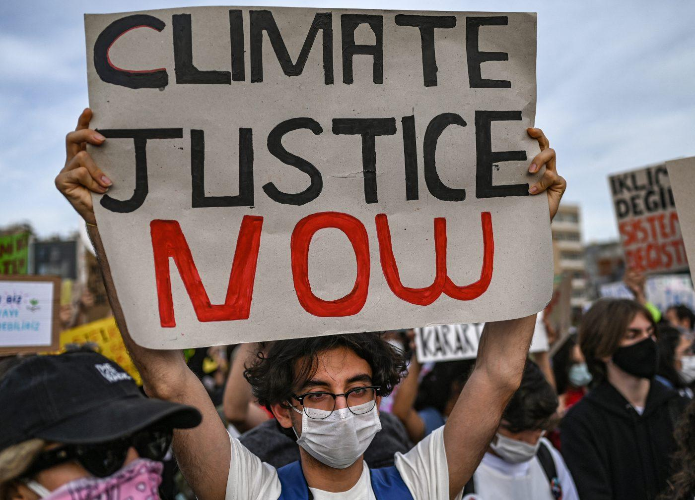

Climate change has been really appearant in Turkey for the past couple of years.
Many major changes in the climate is observed throughout the years and it is crucial that we educate people about what is happening and how important it is.
What is Climate Change?
Climate change is the noticable changes in average weather conditions.
It has a huge impact on the humanity since extraordinary weather conditions are taking people's life as the years pass by.
Turkey is not the only country that is facing these hard conditions. Countries all around the world been observing the same changes in the past couple of years. For instance icebergs are melting, sea levels are rising with a high rate.
Some Recorded Changes In The Weather
In Turkey, many unusual and extreme weather conditions have happened, especially this year.
It is noticed that Turkey has had its hottest year in 2020 since 1971
Floods have been happening more commonly since the rains started getting heavier
Wildfires, hurricanes, draught, sand storms are now a normal part of Turkey's life while they never were before
Earthquakes now occur more with higher magnitudes
Why Is This Happening?

With the increasing and frequent use of fossil fuels, more greenhouse gasses have been appearant in the athmosphere.
As a result, because the excessive amount of these gasses aren't reflected back, they are kept inside of the Ozone Layer making the earth temperature hotter
than usual. That's why global warming is happening and resulting in serious changes in the weather conditions.
What Can Be Done About This Problem?
In order to solve this major issue, we need to unite our power and make a difference. By doing so, we will be able to show
clear and dangerous side effects of Climate Change. Remember that we, humans, have been destroying the environment for centuries.
Therefore, we need to take the responsibility and turn it into how it was before everything started to collapse in nature.
Here are some things you can do to help this movement and make significant change in your society:
Start Small and Spread Awareness:
For the aim of spreading awareness, start with a small audience and target the people in your own town/city.
Organizing events can be a little exhausting and require a lot of work, however, if you are a student, you can easily talk with
one of your teachers or the headmaster in your school. You can first organize small walks in your school campus which can later turn intp regular walks in the center of your city.
If you are in a condition that doesn't allow you to do so, you can simply use social media as a way of spreading knowledge. You can share posts that pay attention to
the causes and effects. If you don't use social media, you can read informative articles about Climate Change and pass this knowledge to people around you. There
is always a way of spreading awareness, you just have to find the proper one for your own circumstances.
Use Public Transport:
This might be something that you've heard by many people, but, it is true. If you really want to decrease the amount of
greenhouse gasses that are released to the athmosphere, you need to use more publiec transport rather than your own car. The main
purpose of this action is to make the vehicles release as less gas as they can by making the amount of cars used less.
Another option is that you can walk to your destination or simply use bicycles. It's a win win situation since you will complete your daily
exercise as well as arriving at your work/school etc.
Save the Energy and Other Sources:
Have you ever noticed how you can lower your carbon foot-print by reducing the amount of energy you use in your house?
Turn off the lights whenever you don't need them and try to use the energy in your house as less as you can.
Do not waste any water or food. As draught is in high rise, we need to save water as much as we can. Therefore
we need to use it thoughtfully.
Reduce, Reuse, Recycle:
As mentioned earlier, we need to reduce the amount of consumed energy, food and water. In addition to this, we also need to do recycling and reuse the things we don't use anymore such as turning
your old pair of jeans into a shopping bag. You can even reuse the plastic bags that are given to us in markets. Though plastic is not suggested, if you ended up buying plastic bags, reuse them until you can't use them.
This will reduce the carbon foot-print of that plastic bag.
As you can see, forming a better environment is not that hard. We just need to be more considerate about some situations and
spread awareness. If we all complete our parts in this fighting, we can make Earth come back to its normal condition.